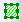

多数のROIがあり、 プロファイル位置 = 行列上の全ROIおよびデータレイアウト = 行ごとの行列の場合、速度の問題が発生する可能性があります。速度低下は、レポートデータの出力列を維持することによって発生します。このような場合、元の出力の列数が@RDRCより大きい場合、出力は元の列をすべて削除します。ただし、すべての出力列を削除すると、出力から作成されたプロットも破棄されることに注意してください。
行列スタックにNetCDFファイルをインポートした後、行列データの操作を実行することができます。
以下の例では、NetCDFファイルでこれらのツールを使用する方法をいくつか示します。
解析：線形フィットを選択してダイアログを開き、NetCDFの行列スタックで線形フィットを実行します。
解析：記述統計を選択してダイアログを開き、行列スタックで記述統計（平均, SD（標準偏差）, 最小, 最大, 中央値, 合計）を実行します。
解析：数学：減算を選択してダイアログを開き、同じサイズの2つの行列スタックを減算して、これら2つのデータの差を取得します。
以下の例ではまず始めに、NetCDFファイルから行列の平均値を取得します。次に、2つの平均値の行列を減算し、それらの差を取得します。
ユーザストーリー；
行列：ピクセル抽出を選択してダイアログを開き、行列スタック内のすべての行列の、指定したXY座標のZ値を抽出します。
XY座標値を指定するには、
または
または
行列：サイズ変更を選択してmsresizeダイアログを開き、サイズ変更オプションとして補間を選択して、NCファイルからより詳細な情報を取得します。
行列がイメージモードにあるとき、矩形/円形/多角形/領域ツールを用いて領域を関心領域（ROI）として選択し、そこから情報を抽出することができます。
ROIを右クリックして、ショートカットメニューからオプションを選択します。ROIを削除するには、Deleteキーを押します。
複数のROIを追加するには：
各ROIは、デフォルト名（ROIなど）で追加されます。行列イメージに複数のROIを追加できますが、別のROIを追加する前に、各ROIの名前を変更する必要があります。
選択したROIの位置をコピーします。選択したROIの位置を別のROI（幅、高さ...など）に貼り付けます。
ROIオブジェクトを保存します。
オブジェクトを保存された.ROIファイル内のオブジェクトに置き換えます（ヒント：インポートする「ダミー」ROIを作成します）。
行列にROIを追加し、行列のROIを右クリックして、XYからROIを作成するを選択します。そしてxy2roiツールを使用してワークシートのXYデータをインポートしてROIを定義します。
例えば、シェープファイルからのデータセットがある場合、NetCDF行列にインポートすることができます。
mroi2matツールを使用して、ROIから新しい行列を生成します。
mroi2xyzツールを使用して、ROIのXYZ値から新しいワークシートを生成します。
mroiprofileツールを使用して、ROIの記述統計値（平均, SD（標準偏差）, 最小, 最大, 中央値, 合計, XYの最小, XYの最大）を生成します。強度プロファイルダイアログに重み付けROIチェック ボックスが表示されます。このオプションが選択されている場合、各ピクセルは、ピクセル四角形と ROI多角形の交点の面積によって重み付けされます。これは、ROI 座標がピクセルを完全に囲んでいない場合の結果を改善するためのものです。
たとえば、シェープファイルデータセットをROIとして追加（XYからROIを作成）した後、強度プロファイルツールを使用してROIデータセットを分析できます。
このダイアログについては、XファンクションMroiprofileを参照してください。
多数のROIがあり、 プロファイル位置 = 行列上の全ROIおよびデータレイアウト = 行ごとの行列の場合、速度の問題が発生する可能性があります。速度低下は、レポートデータの出力列を維持することによって発生します。このような場合、元の出力の列数が@RDRCより大きい場合、出力は元の列をすべて削除します。ただし、すべての出力列を削除すると、出力から作成されたプロットも破棄されることに注意してください。 |
行列にROIを追加し、ROIを右クリックして、クリアを選択します。
4D行列ブック(4次元目はシート)の場合、1つのROI は行列シートにまたがって表示されます。 そして、ROI はアクティブシートに表示されます。
このROI では、 新規作成、XYZデータ抽出、強度プロファイルツールもサポートされています。アクティブ行列シートの結果を生成します。シートを切り替えると、アクティブシート用の結果に更新されます。